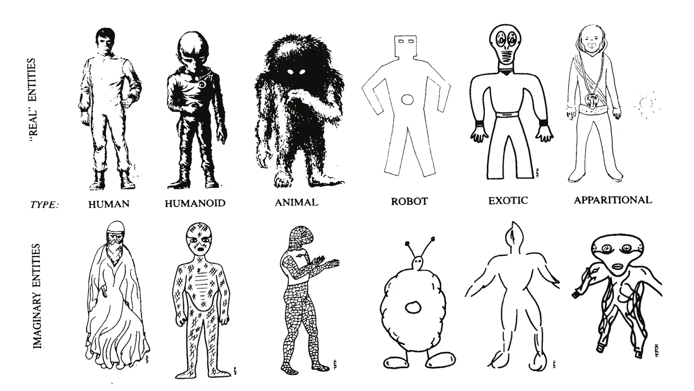

Some people claim to have come into contact and communicated, sometimes repeatedly, with beings of extra-human origin. We can distinguish “abductees” reporting an abduction experience and “contactees” claiming direct contact with non-human entities. Numerous studies have concluded that most “abductee” experiences were caused by altered consciousness states occurring in subjects without psychiatric symptoms, often facilitated by the use of hypnosis by investigators. In contrast, the alleged “contactees” we have studied were mostly suffering from patent psychiatric disorders, often in the form of paranoid delirium.
The UFO phenomenon has the peculiarity of not being reproducible and therefore it doesn’t lend itself easily to traditional experimental scientific analysis. This is also valid for many other phenomena such as ball lightning, not to mention meteorites (both long disputed by scientists). The UFO phenomenon cannot therefore be studied directly, as pointed out by Hynek Hynek J.A.: The UFO Experience: A Scientific Enquiry, New York, Marlowe & Company, (originally published , prefaced by Jacques Vallee) and Esterle : it can only be comprehended through sighting reports. This explains the crucial role of the alleged witness as a transducer of information Jimenez M.: La place de la psychologie dans l’étude du phénomène OVNI, in Recueil des communications aux journées d’étude sur les Phénomènes Aérospatiaux non Identifiés, Paris and Toulouse, , Toulouse (France), Centre National d’Etudes Spatiales, , and sometimes even as a creator when it is not a question of real experiences, but of illusions, hallucinations, delusions, or hoaxes. It is therefore essential to study medical and psychological aspects which may affect the alleged witnesses and the reliability of their statements Mavrakis D., Olivier M.P.: Les Objets Volants Non Identifiables, Paris, Laffont, .
UFO sightings are classified into several groups Hynek J.A.: The UFO Experience: A Scientific Enquiry, New York, Marlowe & Company, (originally published , prefaced by Jacques Vallee), ranging from simple sightings at a distance (nocturnal lights: 65% of the cases, diurnal discs: 25% of the cases, plus rare radar/optical reports or instrumental observations) to close encounters (first kind: UFO seen close; second kind: side effects on the environment or living beings; third kind: where “animated entities“ are sighted). In this paper we will focus on two categories extending close encounters of the third kind: “abductees” (sometimes called close encounters of the fourth kind) and “contactees” (sometimes called close encounters of the fifth kind).
Numerous cases of “abductions” have been reported, especially in the United States Bullard T.E.: The Influence of Investigators on UFO Abduction Reports: Results of a Survey, in Pritchard A., Pritchard D.E., Mack J.E. et al. (eds.): Alien Discussions, Proceedings of the Abduction Study Conference, Cambridge (Mass.), North Cambridge Press, , pp. 571-619 Clark J.: A Brief History of the UFO-Abduction Phenomenon, in Pritchard A., Pritchard D.E., Mack J.E. et al. (eds.): Alien Discussions, Proceedings of the Abduction Study Conference, Cambridge (Mass.), North Cambridge Press, , pp. 15-18 Donderi D.C.: Validating the Roper poll: a scientific approach to the abduction evidence, in Pritchard A., Pritchard D.E., Mack J.E. et al. (eds.): Alien Discussions, Proceedings of the Abduction Study Conference, Cambridge (Mass.), North Cambridge Press, , pp. 225-231 Miller J.: Envelope epidemiology, in Pritchard A., Pritchard D.E., Mack J.E. et al. (eds.): Alien Discussions, Proceedings of the Abduction Study Conference, Cambridge (Mass.), North Cambridge Press, , pp. 232-235, more particularly since (when the case of Betty and Barney Hill benefited from wide publicity). These experiences are characterized by memories of being captured by non-human entities and subjected to varying degrees of physical examination. These experiences have received considerable publicity and have often been interpreted as proof of the existence of extraterrestrials. Apart from a few rare cases, the good faith of the witnesses, who are convinced of the reality of their experience, cannot be doubted Appelle S.: The Abduction Experience: A Critical Examination of Theory and Evidence, Journal of UFO Studies, vol. 6, , pp. 29-78 and is generally accepted even by the most ardent skeptics.
An abduction experience usually occurs at night, in a car (after a long tiring period of driving), outdoors, or simply in bed. The subject sees an intense blue or white light rapidly approaching him (or her), hears a buzzing noise, is distressed, and feels the impression of an inexplicable alien presence near him. Feeling paralyzed, he is then transported, or feels himself floating, inside a large room, where strange beings are frequently found, and may then undergo various examinations (which can range from vague sensations of touching to a thorough medical examination). Generally, no substantive element of the witness’s experience is provided. In a few cases, the witness has claimed to have recovered “artifacts” but the analysis of these artifacts has always allowed a demonstration of a commonplace origin (terrestrial organic in general) and not extraterrestrial Pritchard D.E.: Physical evidence and abductions, in Pritchard A., Pritchard D.E., Mack J.E. et al. (eds.): Alien Discussions, Proceedings of the Abduction Study Conference, Cambridge (Mass.), North Cambridge Press, , pp. 279-295.
Bullard showed that an abduction experience usually includes several of the elements below, usually in this order Bullard T.E.: UFO Abduction Reports: The Supernatural Kidnap Narrative Returns in Technological Guise, Journal of American Folklore, vol. 102, , pp. 147-170 Bullard T.E.: The Influence of Investigators on UFO Abduction Reports: Results of a Survey, in Pritchard A., Pritchard D.E., Mack J.E. et al. (eds.): Alien Discussions, Proceedings of the Abduction Study Conference, Cambridge (Mass.), North Cambridge Press, , pp. 571-619:
This typical scenario covers most of the elements that can be encountered during abductions; in general, a given removal contains only some of these elements. Sometimes the subject retains the memory of all or part of the events he thinks he has experienced (vigilant abduction), but usually most details will only be remembered afterwards, either under hypnosis, or “spontaneously” (after study, it turns out that most “spontaneous” recollections are hardly spontaneous and occur after suggestions from the subject’s entourage, from reading an article, or from viewing a TV program on abductions). Frequently, the witness will then be able to notice missing time in his memories, corresponding to the amnesia of the period of the abduction, and leading him to seek the cause of this missing time. Enthusiastic ufologists attribute this amnesia to the intervention of the aliens who carried out the abduction, whereas skeptics consider the entire experience to be delusional, imaginative, or dreamlike.
Here is an example of a widely publicized abduction:
On , Carlos Alberto Diaz, a 28-year-old married man, returned to his home in a suburb of Bahia Blanca (Argentina). It was already in the morning. While crossing a railway line, he was suddenly blinded by a strange light. Anguished, he wanted to run away, but was unable to make the slightest movement. He then heard a buzzing, then felt himself pulled up off the ground and then fainting. The witness then relates that, when he regained consciousness, he found himself in the center of a brilliant sphere, slow and translucent, surrounded by three greenish unknown creatures floating around him. The creatures began to tear hair from the witness, who tried in vain to resist and then lost consciousness soon after. The witness woke up at allegedly around on the side of a highway in Buenos Aires, 785 kilometers south of Bahia Blanca, his watch having stopped at . After hitchhiking and admission to a hospital center at and having undergone in-depth medical examinations, the witness maintains his story.[Editor's note] Buenos Aires lies north-east of Bahía Blanca (about 575 km as the crow flies), not south of it. The case file dates the abduction to the early hours of , when Diaz was coming home from work, and describes the sphere as smooth and shiny (“slow” is probably a mistranslation).
Although this case has been considered as a hoax by several enquirers, this witness’s account is also entirely consistent with hypnagogic hallucinations and sleep paralysis occurring either in a normal subject in certain infrequent circumstances or at any time in a narcoleptic subject.
Among the studies done on abductee cases:
According to numerous studies Baker R.A.: The Aliens among us: Hypnotic Regression Revisited, The Skeptical Inquirer, vol. 12, n° 2, , pp. 147-162 Baker R.A.: No Aliens, No Abductions: just Regressive Hypnosis, Waking Dreams, and Anthropomorphism, in Frazier K., Karr B. & Nickell J. (eds.): The UFO Invasion, Amherst (New York), Prometheus Books, , pp. 249-265 Ballester Olmos V.J.: Alleged experiences inside UFOs: An analysis of abduction reports, Journal of Scientific Exploration, vol. 8, n° 1, , pp. 91-105 Blackmore S.: Abduction by Aliens or Sleep Paralysis?, The Skeptical Inquirer, vol. 22, , pp. 23-28 Blackmore S.: Alien Abductions, Sleep Paralysis and the Temporal Lobe, European Journal of UFO & Abduction Studies, vol. 1, n° 2, , pp. 113-118 Evans H.: More thoughs on abductions, Journal of UFO Studies, new series, vol. 1, , pp. 149-152 Evans H.: Altered states of consciousness: Unself, Otherself, and Superself, Wellingborough (England), Aquarian Press, Hines T.: Pseudoscience and the Paranormal, Amherst (New York), Prometheus Books, Perrotta G.: Alien Abduction Experience: Definition; neurobiological profiles, clinical contexts and therapeutic approaches, Ann Psychiatry Treatm, vol. 4(1), , pp. 25-29 Randle K.D., Estes R., Cone W.P.: The Abduction Enigma, New York, Forge Books, Spanos N.P., Cross P.A., Dickson K., DuBreuil S.C.: Close Encounters: an examination of UFO experiences, Journal of Abnormal Psychology, vol. 102, n° 4, , pp. 624-632, most if not all “abductee” experiences may be explained by altered states of consciousness triggered by various causes Tart C.T.: Altered States of Consciousness, New York, John Wiley & Sons, :

| Symptoms | Likely explanations |
|---|---|
| Sensation of paralysis and foreign presence | Sleep paralysis |
| Seeing a bright light or an object rapidly approaching the subject, hearing a buzzing sound | Isakower phenomenon (hypnagogic hallucinations) |
| Floating and moving sensation | Muscle relaxation, inhibition of proprioceptive sensations, vestibular sensations, sleep paralysis. |
| Vague memory of being pulled, poked, pushed, examined by alien entities | Hypnagogic and hypnopompic hallucinations aggravated by fear |
| Missing time where the subject no longer remembers what he did during the period considered | State of sleep, dreamy state, automatic behavior |
| Marks and traces on the body with no memory of the causative event | Common phenomenon: most people, if they examine themselves carefully, will find those |
| Sudden recall of “repressed” memories after hypnotic regression, awake suggestion, reading an article or viewing a program on the topic of abductions | Creation of incorrect pseudo-memories by auto- or hetero-suggestion. |
In some cases, people claim contact and communication with beings of extra-human origin. This communication could have been made within the framework of an alleged UFO sighting, in other cases, the extra-human origin is affirmed without a sighting being associated. Although a single communication may be reported, in most cases the witness reports multiple communication events and sometimes claims being still in contact with these entities. It is interesting to note that such allegations are not only contemporary Eberhart G.M.: UFOs and the Extraterrestrial Contactee Movement, 2 volumes, Metuchen (New Jersey), Scarecrow Press, Melton J.G.: The Contactees: a Survey, in Lewis J.R. (ed.): The Gods have landed, new religions from other worlds, Albany (New York), State University of New York Press, , pp. 1-13, even if they have greatly increased in the last seventy years Melton J.G.: The Flying Saucer Contactee Movement, 1950-1994: a Bibliography, in Lewis J.R. (ed.): The Gods have landed, new religions from other worlds, Albany (New York), State University of New York Press, , pp. 251-332.
In the literature devoted to the UFO phenomenon, these individuals are referred to as “contactees,” to be differentiated from “abductees,” victims of an experience such as abduction, even if the contact occurs for “contactees” quite often during an alleged UFO abduction.
One of the most famous cases is undoubtedly the one reported by George Adamski, a 60-year-old man, already passionate about UFOs and a conference speaker on the subject, who in claimed to have observed a UFO and met on this occasion an alien passenger Stupple D.: The man who talked with Venusians, in Fuller C.G. (ed.): Proceedings of the First International UFO Congress, New York, Warner Books, , pp. 261-271. Adamski provided various “proofs” (photos, plaster cast of the footprints of the extraterrestrial, corroborative testimonies, etc.) in support of his statements. The affair caused a stir and immediately gave Adamski international notoriety.
Within two years of the publication of Adamski’s first book in (Flying Saucers Have Landed), more than a dozen other supposed “contactees” came forward publishing works relating their adventures. Even though it is a demonstrated hoax, the Adamski case, which had considerable socio-cultural importance, can be considered the archetype of the “contact” cases.
In most cases, the alleged content of the exchange is significant: these beings, usually impressive and coming from a utopian planet, would have charged the so-called “contactees” with “missions” of planetary scope, often concerning nothing less than the safeguard of humanity Wojcik D.: UFO Mythologies: Extraterrestrial Cosmology and Intergalactic Eschatology, Traditiones, vol. 50, n° 3, , pp. 15-51.
Although there are charlatans and swindlers among them who shamelessly abuse the general public’s longing for escape and taste for the sensational, most seem to sincerely believe in what they say, but provide no objective and tangible proof to support their surprising assertions.
Although there is nothing to rule out with certainty that in some cases there really were genuine encounters with extraterrestrials, the characteristics of these reported sightings and missions, the elements underlying their speeches, often without great originality, stem from the classic themes of science fiction and our Western cultural baggage. This testifies in favor of a human rather than extra-human origin and reflects the conscious and unconscious ideas and wishes of the so-called “contactees” Lawson A.H.: Hypnosis of imaginary UFO “abductees”, The Journal of UFO Studies, vol. 1, n° 1, , pp. 8-26.
Jung analyzed the writings of a “contactee” from a psychoanalytical point of view Jung C.G.: Flying Saucers: a modern myth of things seen in the skies, Princeton University Press, . Audrerie has shown that ufological themes can serve as a basis for fabrications and delusions and has developed a psychopathological model of psychoanalytical inspiration about them Audrerie D.: Fabulation, délire et thèmes ufologiques . Several authors have observed patients and concluded that events were caused by altered states of consciousness in individuals not suffering from major psychopathological disorders, notably Beyerstein Beyerstein B.L.: Believing is seeing: organic and psychological reasons for hallucinations and other anomalous psychiatric symptoms, Medscape Mental Health, vol. 1, n° 11, , Don and Moura Don N.S.: Topographic Brain Maps of the Abductee, Sueli, in Pritchard A., Pritchard D.E., Mack J.E. et al. (eds.): Alien Discussions, Proceedings of the Abduction Study Conference, Cambridge (Mass.), North Cambridge Press, , pp. 493-495 Don N.S., Moura G.: Topographic Brain Mapping of UFO Experiencers, Journal of Scientific Exploration, vol. 11, n° 4, , pp. 435-453, French et al. French C.C., Santomauro J., Hamilton V. et al.: Psychological aspects of the alien contact experience, Cortex, vol. 44, n° 10, , pp. 1387-1395. A few such cases have been described where contactees, abductees or mere witnesses to alleged UFO sightings actually had paranoid schizophrenia Heuyer G.: Note sur les psychoses collectives, Bulletin de l’Académie Nationale de Médecine, vol. 138, , pp. 487-490 Jacobson E., Bruno J.: Narrative Variants and Major Psychiatric Illnesses in Close Encounter and Abduction Narrators, in Pritchard A., Pritchard D.E., Mack J.E. et al. (eds.): Alien Discussions, Proceedings of the Abduction Study Conference, Cambridge (Mass.), North Cambridge Press, , pp. 304-309 Schwarz B.E.: Saucers, PSI, and psychiatry, in Proceedings of 1974 MUFON Symposium (sponsored by Mutual UFO Network, Akron, Ohio on ), pp. 81-95, paranoid delirium Shaw P.: People with unsubstantiated claims of contact, in Pritchard A., Pritchard D.E., Mack J.E. et al. (eds.): Alien Discussions, Proceedings of the Abduction Study Conference, Cambridge (Mass.), North Cambridge Press, , pp. 24-25 or other psychoses whose type was not specified Lukoff D.: The Diagnosis of mystical experiences with psychotic features, The Journal of Transpersonal Psychology, vol. 17, n° 2, , pp. 155-181 Merloo J.A.M.: Le syndrome des soucoupes volantes, Médecine et Hygiène, 794, , pp. 992-996 Schwarz B.E.: Psychiatric aspects of ufology, in Proceedings of the Eastern UFO Symposium (sponsored by Aerial Phenomena Research Organization, Baltimore, on ), pp. 8-12 Schwarz B.E.: Saucers, PSI, and psychiatry, in Proceedings of 1974 MUFON Symposium (sponsored by Mutual UFO Network, Akron, Ohio on ), pp. 81-95, and had sometimes been hospitalized in a psychiatric ward. Other authors, on the other hand, have not found any psychiatric pathology among them but consider them as personalities prone to daydreaming (“fantasy-prone personalities” according to Wilson and Barber Wilson S.C., Barber T.X.: The Fantasy-Prone Personality: Implications for Understanding Imagery, Hypnosis, and Parapsychological Phenomena, in Sheikh A.A. (ed.): Imagery: Current Theory, Research and Applications, New York, John Wiley, , pp. 340-387), and in particular Bartholomew et al. Bartholomew R.E., Basterfield K.: UFO Abductees and Contactees: Psychopathology or Fantasy Proneness?, Professional Psychology: Research and Practice, vol. 22, n° 3, , pp. 215-222.
We were able to observe several of these contactees, most of them outside of a hospital setting Mavrakis D., Bocquet J.-P.: Psychoses et Objets Volants Non Identifiés, Canadian Journal of Psychiatry, vol. 28, , pp. 199-201 Mavrakis D.: Etude psycho-pathologique des « contactés », Inforespace, vol. 12, n° 64, , pp. 4-6 Mavrakis D.: Analyse psychologique et psychiatrique des cas de contacts allégués avec des êtres d’origine extra-humaine, in Recueil des communications aux journées d’étude sur les Phénomènes Aérospatiaux non Identifiés, , Toulouse (France), Centre National d'Etudes Spatiales, Mavrakis D.: Les OVNIs : Aspects psychiatriques, médico-psychologiques, sociologiques, Paris, Editions Universitaires Européennes, .
The study of the nine contactees that we studied led us to conclude that most of them were in fact suffering from patent psychiatric disorders, often of the paranoid or paraphrenic type.
Except for two patients hospitalized in the psychiatric ward, all the other subjects had, to our knowledge, no known psychiatric history. As we will see later, it is likely that they were able to find a balance in their delusional beliefs.
Here is an example of such a clinical case Mavrakis D.: Les OVNIs : Aspects psychiatriques, médico-psychologiques, sociologiques, Paris, Editions Universitaires Européennes, :
I was sitting in the premises of an astronomy association with a study committee on UFOs. Someone’s knocking at the door. A person half-opens it, casts a circular glance over the room, then enters and closes the door carefully, not without first checking that he was not being followed [persecutory element]. He is a man in his thirties, apparently in good physical health, properly dressed, clean. He comes to meet the leaders of the association because he knows UFOs well… better than anyone else [megalomania]. After many convolutions, he finally agrees to come to the point. He often encountered extra-terrestrials, or rather he often fought them. These have indeed expansionist aims on our planet that would have long since fallen into their hands if he had not succeeded so far in defeating them thanks to his “psychic force.” Which explains why he is now the number one target of invaders who are ready to do anything to make him disappear. Moreover, in ambush fifty meters away, stands one of them, who will certainly try to shoot him (using an “X-ray” weapon) when he comes out [imaginative and interpretative delirium with a strong persecutory component]. At our request, he certifies to be in possession of numerous proofs of the existence of these extra-terrestrials. Unfortunately, he does not think humanity is mature enough to be able to take care of them. At our insistence, he finally agrees to show us a photo of an extraterrestrial craft leaving their secret lunar base: in fact, it is the luminous trail left by a meteor, at a low angular distance from the Moon. Just before leaving, he also let us glimpse a triangular symbol scribbled on a piece of paper: the secret acronym of the invaders. After an interview of about twenty minutes, he leaves, refusing to leave us his contact details: his duty of planet protector calls him.
The subject exhibits of course a delusion, that is to say, a series of erroneous ideas, shocking the evidence,
inaccessible to criticism
Ey H.: Délires, Revue de Médecine, vol. 9, n° 24, , pp. 1545-1555. The DSM
defines delusion as an erroneous personal belief based on incorrect inferences concerning external reality, and
firmly held by the subject despite the opinion of nearly everyone and clear and irrefutable evidence to the
contrary
American Psychiatric Association: DSM-V, Diagnostic and Statistical Manual of Mental Disorders, 5th edition, . This definition is of course not perfect, for example in the case of contactees having founded
ufological sects, the opinion of the leader is shared by his followers.
In the clinical case cited, this paranoid delusion is accompanied by megalomania and a feeling of persecution. Here the persecuting entity is represented by hostile extraterrestrials Partridge C.: Alien demonology: the Christian roots of the malevolent extraterrestrial in UFO religion and abduction spiritualities, Religion, vol. 34, , pp. 163-189, whereas in most of the other cases that we have observed, the extraterrestrials are often perceived as benevolent. Like this subject, most of the contactees we met also seemed to suffer from a paranoid delusion, the persecutory component of which was often not as obvious as in the case just described.
This paranoid delusion most often finds its source in erroneous interpretations of real facts (interpretative origin) and/or in elaborations made according to the reality on which the patient develops fantasies with themes of power, grandeur, mysticism, etc. In general, the origin of delirium varies according to the case: non-hallucinatory, rarely dreamlike, it is above all imaginative, interpretive and sometimes intuitive. Most of these subjects can be classified as paranoid wish personalities according to Kretschmer, defined by the following characteristics:
The delirium of the “contactees” encountered outside of a hospital or psychiatric environment was usually well systematized, coherent, and logical, often plausible; the number of flaws subject to criticism being inversely proportional to the patient’s intelligence.
On the other hand, there are other “contactees” who suffer from poorly systematized delusions, particularly if they are of the schizophrenic type: these patients are usually cared for in a psychiatric ward, and their delusions generally do not spread outside the hospital setting. We also observed a few patients suffering from paraphrenia; such delirium may be more or less well systematized.
It can be noted that only the themes of the patients’ delusions have changed over the years, taking into account
recent technological and cultural achievements (science fiction): the Napoleon Bonapartes are now representatives
of extraterrestrials! Lycanthropy, royal parentage and demonic possession have been replaced by “new age” themes.
Maruani and Brillaud have moreover maintained in a study at the psychoanalytical level that at the collective
level, science fiction as modern mythology fulfills the same function than the imaginary in the paraphrenic
Maruani G., Brillaud D.: Anticipation, paraphrénie et science-fiction, L’évolution psychiatrique, vol. 43, n° 1, , pp. 115-141.
The majority of “contactees” with systematized delirium seemed to possess an inconsistent social status, at least before the onset of delirium Warren D.I.: Status inconsistency theory and flying saucer sightings, Science, vol. 170, n° 3958, , pp. 599-603. This means that their intelligence, their ambitions and sometimes their general culture was high compared to the social position they occupied. In these patients, megalomania and ego hypertrophy compensate and mask their unconscious feelings of frustration and inferiority. This is how the delirium often began, following an unpleasant and frustrating professional or personal event which was felt as a failure by the patient. For example, in one case, the delirium took shape after a traffic accident, where the subject was driving an ambulance in which he was seriously injured during a frontal impact on a national highway, the transported patient dying on the scene. According to the subject, a deliberate extraterrestrial intervention caused the accident: this explanation of course exonerates the subject from any responsibility, having been the victim of superior forces outside his control.
It is interesting to note the similarities between these “contactees” and other psychotic founders of various sects. In fact, several “contactees” have created sects, often prophesying the imminence of a planetary cataclysm and working to save all or part of humanity from its imminent destruction, generally with the help of benevolent extraterrestrials Balch R.W., Taylor D.: Salvation in a UFO, Psychology Today, vol. 10, , pp. 58-66 and 106 Balch R.W., Taylor D.: Seekers and saucers: The Role of the Cultic Milieu in Joining a UFO Cult, American Behavioral Scientist, vol. 20, n° 6, , pp. 839-860 Festinger L., Riecken H.W., Schachter S.: When prophecy fails: A Social and Psychological Study of a Modern Group that Predicted the Destruction of the World, New York, Harper & Row, Wojcik D.: UFO Mythologies: Extraterrestrial Cosmology and Intergalactic Eschatology, Traditiones, vol. 50, n° 3, , pp. 15-51.
The relative plausibility of the well-systematized delirium of these patients explains their significant power of contamination by the creation of collective induced delusions Heuyer G.: Note sur les psychoses collectives, Bulletin de l’Académie Nationale de Médecine, vol. 138, , pp. 487-490. The psychotic “contactee” is then the inducing element influencing credulous and suggestible individuals, often less intelligent than him Grinspoon L., Persky A.D.: Psychiatry and UFO Reports, in Sagan C., Page T. (eds.): UFO, a Scientific Debate, Ithaca (New York), Cornell University Press, , pp. 233-246 Heuyer G.: Note sur les psychoses collectives, Bulletin de l’Académie Nationale de Médecine, vol. 138, , pp. 487-490. Some of the followers are moreover at the edge of the pathological and likely to cross over. These psychotic disciples will in turn play the role of inducing elements for other people, thus contributing to extension of the delusional group.
In fact, both in the United States and in Europe, many ufological sects, some famous, others marginal, flourish and bring together individuals with quite varied psychological profiles and objectives Alnor W.M.: UFO Cults and the New Millennium, Grand Rapids (MI), Baker Books, Bader C.: The UFO Contact Movement from the 1950’s to the Present, Studies in Popular Culture, vol. 17, n° 2, , pp. 73-90 Balch R.W., Taylor D.: Seekers and saucers: The Role of the Cultic Milieu in Joining a UFO Cult, American Behavioral Scientist, vol. 20, n° 6, , pp. 839-860 McClure K.: UFO Cults, in Evans H. and Spencer J. (eds.): UFOs, 1947-1987: The 40-year search for an explanation, London, Fortean Press, , pp. 346-351 Melton J.G.: The Contactees: a Survey, in Lewis J.R. (ed.): The Gods have landed, new religions from other worlds, Albany (New York), State University of New York Press, , pp. 1-13 Melton J.G.: The Flying Saucer Contactee Movement, 1950-1994: a Bibliography, in Lewis J.R. (ed.): The Gods have landed, new religions from other worlds, Albany (New York), State University of New York Press, , pp. 251-332 Stupple D.: Mahatmas and Space Brothers: The Ideologies of Alleged Contact with Extraterrestrials, Journal of American Culture, vol. 7, , pp. 131-139, often playing the role of alternative religions.
For Vallee, the attitude of systematic rejection of the phenomenon by established science plays a key role in the success of these sects Vallee J.F.: Secte, suicide et soucoupes volantes : c'était prévisible !, Anomalies, n° 4, , pp. 8-14:
Skeptics have refused people the right to explore certain areas. People are not fooled: they know their sightings are real, so the public finds themselves caught between what they know to be real experiences and the denials of the academic and scientific communities. This creates dissonance, but also a market for fraud, both in parapsychology and in ufology. It makes honest research almost impossible and it opens the door to extremist religious and spiritual movements.
Despite the cases presented and the socio-cultural impact of certain “contactees,” the relationship between psychiatry and the study of the UFO phenomenon remains rather weak, and as Schwarz observes, the vast majority of witnesses do not present any psychiatric pathology Schwarz B.E.: Psychiatric and parapsychiatric dimensions of UFO’s, in Haines R.F. (ed.): UFO phenomena and the behavioral scientist, Metuchen (New Jersey) and London, The Scarecrow Press, , pp. 113-134 Schwarz B.E.: UFO Dynamics: Psychiatric & Psychic Aspects of the UFO Syndrome, books 1 & 2, Moore Haven (Florida), Rainbow Books, . We must therefore be careful not to consider witnesses of an unidentified phenomenon as deranged victims of hallucinations. This remains in my view applicable even if they relate strange close encounters of the third kind, “abductions” or even “contacts.”
In any case, it is essential that a mental health examiner of an alleged witness must demonstrate perfect objectivity and complete impartiality. The task is difficult since he is responsible for evaluating a patient whose speech may include strange and difficult to accept elements. The mere presence of unusual elements should not be enough to label the subject delusional or psychotic. It is therefore necessary for the examiner to free himself from his own prejudices related to the patient’s assertions, without uncritically accepting the witness’s allegations.
In the end, the important factors to take into account to determine the mental health of the witness are not the strangeness of the related phenomenon, but rather, in addition to the coherence of the account and the existence of corroborating elements, the behavior of the witness with regard to his experience, his medical history and the other psychopathological signs that he may exhibit.
As rightly pointed out by Gorceix, professor of Psychiatry at Paris University Hospital Gorceix A.: La psychiatrie courante de l’omnipraticien, Le Concours Médical, n° 38 (supplement), , p. 36:
In our universe of scientific conformism and mediocre uniformity, the most benign originality, the most inoffensive belief is stigmatized by the term ‘delirium.’ We are not allowed to hear voices or meet demons, things that are all more likely than we think. A rigorous filter is placed between the mystery of the world and the representation allowed to our eyes as civilized men. The rest must be labelled as hallucinations. The best thing, if we happen to experience one day its overwhelming evidence, is to keep quiet. We will thus avoid prolonged internships in so-called specialized circles and the brutalization of massive treatments by these neuroleptic substances to which the counter-magic of scholars attributes an antihallucinatory power.